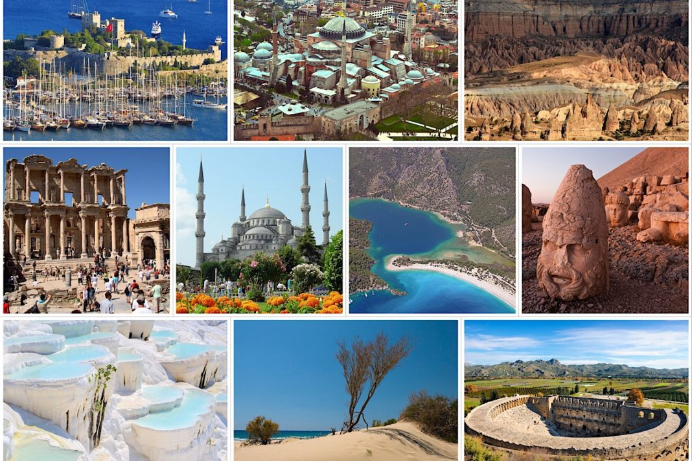

Packed to the brim with ancient monuments left over from a parade of conquerors and endowed with showcase scenery that never fails to impress, Turkey is a dazzling destination that straddles Asia and Europe. Its vibrant culture, famous food, and vast history wow all who venture here, while its glorious landscapes - from the sun-soaked Mediterranean to the mighty mountains and arid steppe - are highlights in themselves.  Whether you want to lap up the Byzantine and Ottoman glories of Istanbul on a city break, laze on the beach, delve into history wandering through ruins such as Ephesus, or see some of the world's most surreal panoramas in Pamukkale and Cappadocia, this country has attractions galore.Packed to the brim with ancient monuments left over from a parade of conquerors and endowed with showcase scenery that never fails to impress, Turkey is a dazzling destination that straddles Asia and Europe. Its vibrant culture, famous food, and vast history wow all who venture here, while its glorious landscapes - from the sun-soaked Mediterranean to the mighty mountains and arid steppe - are highlights in themselves. Whether you want to lap up the Byzantine and Ottoman glories of Istanbul on a city break, laze on the beach, delve into history wandering through ruins such as Ephesus, or see some of the world's most surreal panoramas in Pamukkale and Cappadocia, this country has attractions galore.